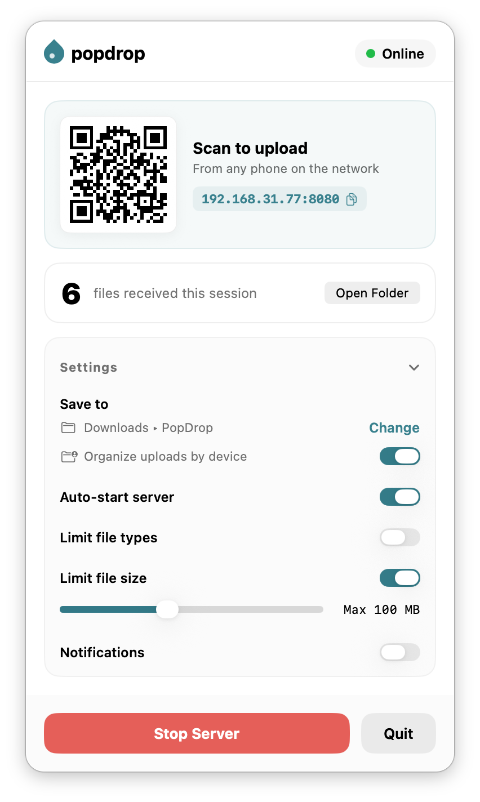

No accounts, no cloud sync, and no apps to install on your phone. Just open PopDrop on your Mac, scan the QR code (or open the local link), and drop your files.

Sending a quick photo or file from an Android phone, a work laptop, or a tablet to a Mac usually means emailing it to yourself, uploading it to Google Drive or iCloud, or dealing with broken Bluetooth connections. PopDrop runs a lightweight local web server on your Mac. If your phone or computer is on the same Wi-Fi or Ethernet network, it can upload files directly to your Mac's Downloads folder in seconds.
If it has a web browser (iPhone, Android, Windows, Linux, tablet), it can send files to your Mac without installing client software.
Click the PopDrop icon in your menu bar to show an instant QR code. Scan it with your phone's camera, or copy the local address (http://192.168.x.x:8080) to share with another computer on your network.
Files go straight from the sending device to your Mac's hard drive over your local router. Nothing ever touches the internet or third-party cloud servers.
Trying to get photos off an old classic phone, an e-reader, or an ancient browser? PopDrop includes a plain-HTML fallback form (/legacy) that works cleanly even without modern JavaScript.
Open the app and start receiving files immediately. No accounts, passwords, or subscriptions.
Built specifically for macOS. You can set file size limits, pick a custom save directory, or configure it to launch automatically at login.
Three steps. No friction.
It runs quietly in your Mac's menu bar. Click the icon anytime to view your status panel and QR code.
Point your phone's camera at the QR code, or open the local IP address on any other device connected to your network.
Select your photos, videos, or documents on your phone. They arrive instantly inside your Mac's Downloads folder.